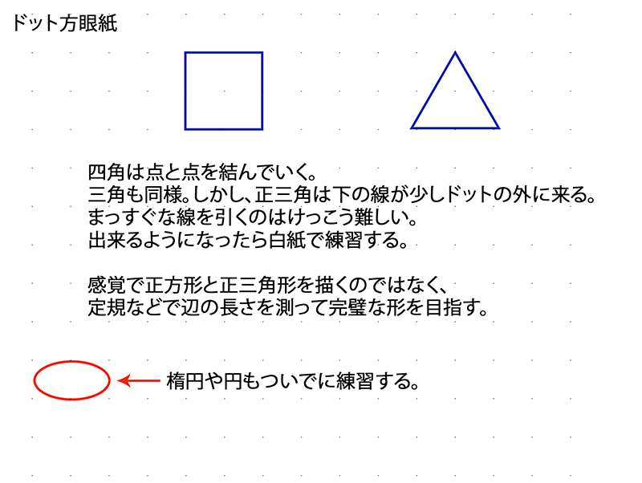
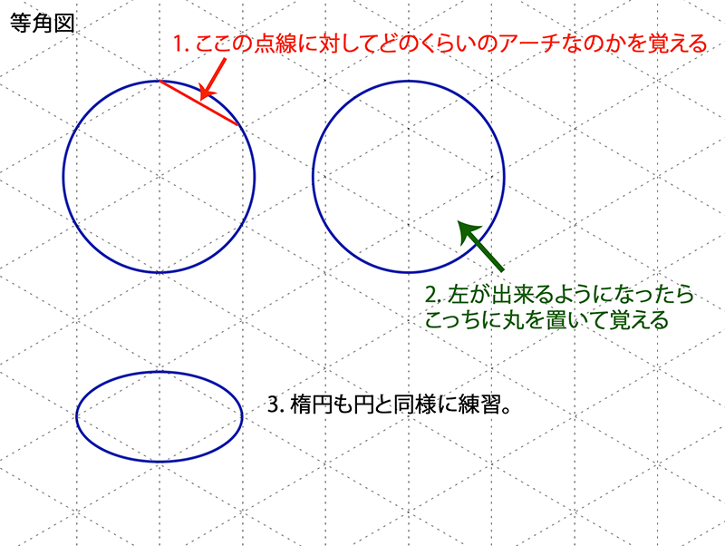

基本の平面図
基本の形は、丸い系(円と楕円)とカクカク系(三角・四角・五角)。まっすぐな線を定規なしで描くのと円のように丸まった滑らかな線を同じ丸みで描くのはけっこう難しい。
練習
腕や指の動きの関係上、線を引きやすい方向があるのでその方向に向かって描くと綺麗に描ける。
練習の際は正確な円や正三角形の図形を参照しながら、ドットや三角の図形を基準にどのくらいの角度や距離感で線を引くのかと言うのを考えながら練習する。


基本の形は、丸い系(円と楕円)とカクカク系(三角・四角・五角)。まっすぐな線を定規なしで描くのと円のように丸まった滑らかな線を同じ丸みで描くのはけっこう難しい。
腕や指の動きの関係上、線を引きやすい方向があるのでその方向に向かって描くと綺麗に描ける。
練習の際は正確な円や正三角形の図形を参照しながら、ドットや三角の図形を基準にどのくらいの角度や距離感で線を引くのかと言うのを考えながら練習する。